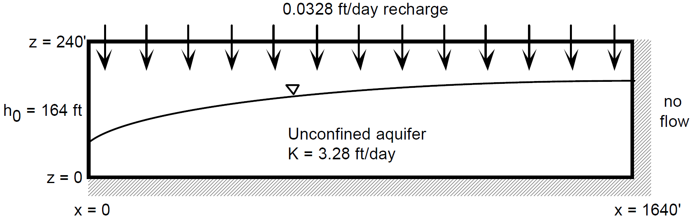

Steady-State Flow in an Unconfined Aquifer: Head, and Flux Boundary Conditions¶
Capabilities Tested¶
Background¶
Flow in an unconfined aquifer is inherently multi-dimensional, which generally precludes simple closed-form analytic solutions. In many practical applications however, vertical gradients and velocities are small relative to their horizontal counterparts and can be neglected following Dupuit [Dup63] and Forchheimer [For30]. The Dupuit-Forchheimer theory of free-surface flow assumes that [FC79]:
flow is horizontal and equipotential lines are vertical, and
hydraulic gradient is equal to the slope of the free surface.
With these assumptions and assuming the Cartesian \(x\)- and \(y\)-coordinates align with the principal axes of the hydraulic conductivity tensor, the general expression for saturated flow in an unconfined aquifer becomes (e.g., [dM86])
(1)¶\[\frac{\partial}{\partial x} \left[\int_\sigma^h K_{xx}dz\frac{\partial h}{\partial x}\right] + \frac{\partial}{\partial y} \left[\int_\sigma^h K_{yy}dz\frac{\partial h}{\partial y}\right] = \omega_d \frac{\partial h}{\partial t} + Q\]
where \(h\) = hydraulic head (and elevation of the water table) [L], \(t\) = time [T], \(K\) = saturated hydraulic conductivity tensor [L/T], \(\sigma\) = elevation of aquifer base [L], \(\omega_d\) = specific yield or drainage porosity [-], and \(Q\) = volumetric flow rate per unit area withdrawn from the aquifer (sink) [L/T]. The hydraulic or total head (\(h\), [L]) is the sum of pressure head (\(P/\rho g\), [L]) and elevation (\(z\), [L])
\[h = \frac{P}{\rho g}+z\]
where \(\rho\) = density [M/L3], and \(g\) = gravitational acceleration [L/T2]. For constant, isotropic, hydraulic conductivity, a horizontal aquifer base at \(\sigma = z = 0\), and one-dimensional flow in the \(x\)-direction, Equation (1) becomes simply
(2)¶\[\frac{d^2h^2}{dx^2} = \frac{2Q}{K}\]
The ordinary differential equation (2) is linear in \(h^2\) and easily solved by direct integration as
(3)¶\[h^2 = C_1 x + C_2\]
where the integration constants \(C_1\) and \(C_2\) depend on the boundary conditions and volumetric sink \(Q\). Following [Ale07], Section 4.2), two particular solutions are considered for testing Amanzi implementation of prescribed hydraulic head, no-flow, and recharge boundary conditions, Darcy’s law, and mass conservation on a problem involving variably saturated conditions and quasi 2D flow (approximately horizontal in the saturated zone and approximately vertical in the unsaturated zone).
Analytic solution #1: Prescribed head at boundaries¶
When hydraulic head is prescribed at both boundaries as
(4)¶\[\begin{split}h(0) &= h_0\\ h(L) &= h_L\end{split}\]
the analytic solution (3) for hydraulic head becomes
(5)¶\[h^2 = h_0^2 + (h_L^2 - h_0^2) \frac{x}{L} + \frac{Q_{src}L^2}{K}\left( \frac{x}{L} \right) \left(1 - \frac{x}{L} \right)\]
where \(L\) = domain length [L], and \(Q_{src} \equiv -Q\).
Analytic solution #2: Prescribed head and no-flow boundaries¶
For the alternative boundary conditions
(6)¶\[\begin{split}h(0) &= h_0\\ h'(L) &= 0 \text{ (no-flow)}\end{split}\]
the analytic solution (3) becomes
(7)¶\[h^2 = h_0^2 + \frac{Q_{src}L^2}{K}\left( \frac{x}{L} \right) \left(2 - \frac{x}{L} \right)\]
where again \(Q_{src} \equiv -Q\).
Amanzi verification test problem #1¶
To generate numerical results the following specifications are considered for analytic solution #1 ([Ale07], Figure 4.2.1):
{kind=link}
With the Dupuit approximation the analytic solution given by Equation (5) is one-dimensional in the horizontal coordinate and describes only the saturated zone. Because Amanzi does not directly solve a reduced governing equation set equivalent to Equation (1), a two-dimensional \((x,z)\) simulation of the combined saturated and unsaturated zones using the Richards (1931) equation is required. Thus a vertical hydraulic conductivity and parameters defining moisture characteristic curves for the unsaturated zone are required beyond the material properties implied by Equation (5). To minimize vertical gradients consistent with the Dupuit assumption, the vertical hydraulic conductivity is set 10x higher than the horizontal conductivity. To minimize non-vertical flow in the unsaturated zone (and preserve the uniform distribution of recharge applied to the top of the model domain), van Genuchten (1980) - Mualem (1976) parameters consistent with a gravel are selected. Input parameters for the numerical simulation are summarized as:
Domain (2D)
\(x_{min} = z_{min} = 0\)
\(x_{max} = L = 100 ft, z_{max} = 60 ft\)
Boundary conditions
no-flow prescribed at the \(z_{min}, z_{max}\) boundaries (\(Q_{src} = 0\))
prescribed hydraulic head at the x-coordinate boundaries: \(h(0) = 40 ft, h(L) = 20 ft\)
Material properties
Model discretization
\(\Delta x = 1 ft, \Delta z = 1 ft\)
For these input specifications, Amanzi simulation output is expected to closely match
(8)¶\[h [ft] = \sqrt{1600 - 12 x}\]
from Equation (5). This is demonstrated with the next figure.
(Source code, png, hires.png, pdf)
{kind=link}
{kind=link}
(TBD) somehow insert table comparing analytic and Amanzi hydraulic head
Amanzi verification test problem #2¶
Similarly, to generate numerical results for analytic solution #2 the following specifications are considered (Aleman 2007, Figure 4.2.2):
{kind=link}
Input parameters for the numerical simulation are summarized as:
Domain (2D)
\(x_{min} = z_{min} = 0\)
\(x_{max} = L = 1640 ft, z_{max} = 240 ft\)
Boundary conditions
no-flow prescribed at the \(x_{max}, z_{min}\) boundaries
recharge at \(z_{max}\) boundary, \(Q_{src} = 0.0328 ft/d\)
prescribed hydraulic head at the x-coordinate boundary: \(h(0) = 164 ft\)
Material properties
Model discretization
\(\Delta x = 1 ft, \Delta z = 2 ft\)
For these input specifications, Amanzi simulation output is expected to closely match
(9)¶\[h [ft] = 164 \sqrt{1 + \left( \frac{x}{1640} \right) \left( 2 - \frac{x}{1640} \right)}\]
from Equation (7).
{kind=link}
References¶
- Ale07(1,2)
S. Aleman. Porflow testing and verification. Technical Report, Savannah River National Laboratory, 2007.
- dM86
G. de Marsily. Quantitative Hydrology. Academic Press, London, 1986.
- Dup63
J. Dupuit. Études théoriques et pratiques sur le mouvement des eaux dans les canaux découverts et à travers les terrains perméables. Dunod, Paris, 1863.
- For30
P. Forchheimer. Hydraulik. Teubner, Leipzig, Berlin, third edition, 1930.
- FC79
R. A. Freeze and J. A. Cherry. Groundwater. Prentice-Hall, Inc., Englewood Cliffs, NJ, 1979.
- Mua76(1,2)
Y. Mualem. A new model for predicting the hydraulic conductivity of unsaturated porous media. Water Resour. Res, 12(3):513–522, 1976.
- PMF06(1,2)
M. A. Phifer, M. R. Millings, and G. P. Flach. Hydraulic property data package for the e-area and z-area soils, cementitious materials, and waste zones. Technical Report, Savannah River National Laboratory, 2006.
- vG80(1,2)
M.T. van Genuchten. A closed-form equation for predicting the hydraulic conductivity of unsaturated soils. Soil Sci. Soc. Am. J, 44(5):892–898, 1980.
About¶
Directory: testing/verification/flow/richards/steady-state/unconfined_no_recharge_1d
Authors:
Maintainer(s): David Moulton (moulton@lanl.gov)
Input Files:
amanzi_unconfined_no_recharge_1d.xml, Spec 2.3
auto generated structured mesh